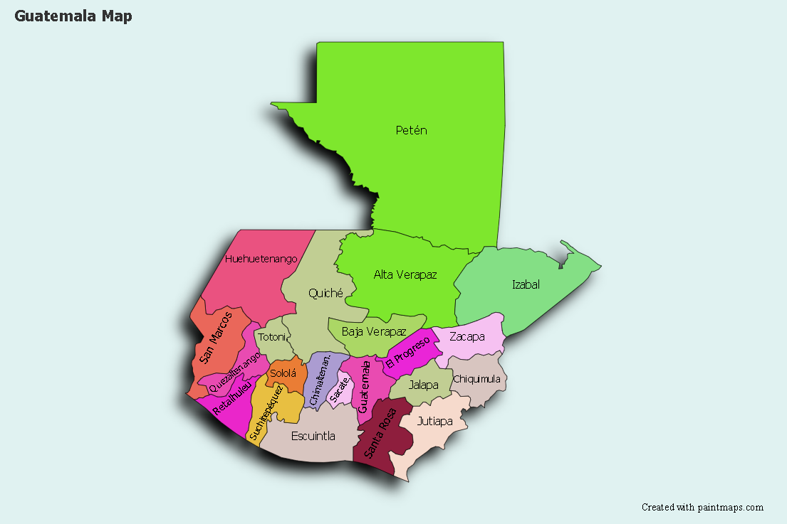

Departamentos
Mapa geografico y nombres de los departamentos y sus cabezeras

1. Alta Verapaz, Cobán
2. Baja Verapaz, Salamá
3. Chimaltenango, Chimaltenango
4. Chiquimula, Chiquimula
5. El Progreso, Guastatoya
6. Escuintla, Escuintla
7. Guatemala, Ciudad de Guatemala
8. Huehuetenango, Huehuetenango
9. Izabal, Puerto Barrios
10. Jalapa, Jalapa
11. Jutiapa, Jutiapa
12. Petén, Flores
13. Quetzaltenango, Quetzaltenango
14. Quiché, Santa Cruz del Quiché
15. Retalhuleu, Retalhuleu
16. Sacatepéquez, La Antigua Guatemala
17. San Marcos, San Marcos
18. Santa Rosa, Cuilapa
19. Sololá, Sololá
20. Suchitepéquez, Mazatenango
21. Totonicapán, Totonicapán
22. Zacapa, Zacapa